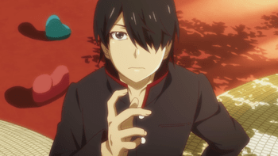
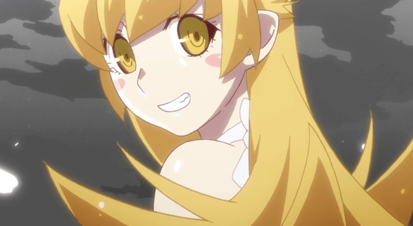
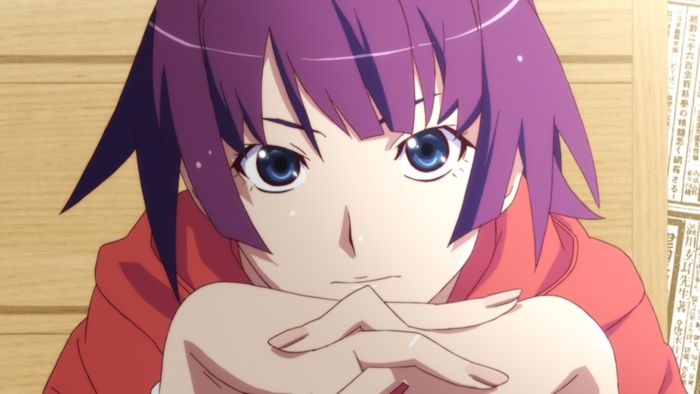
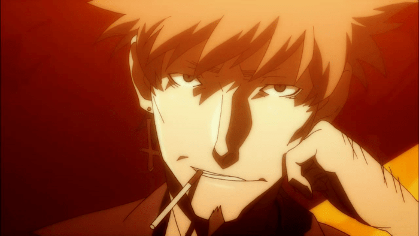
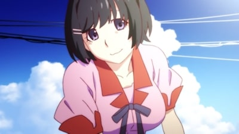
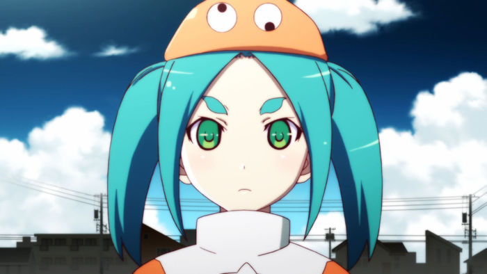
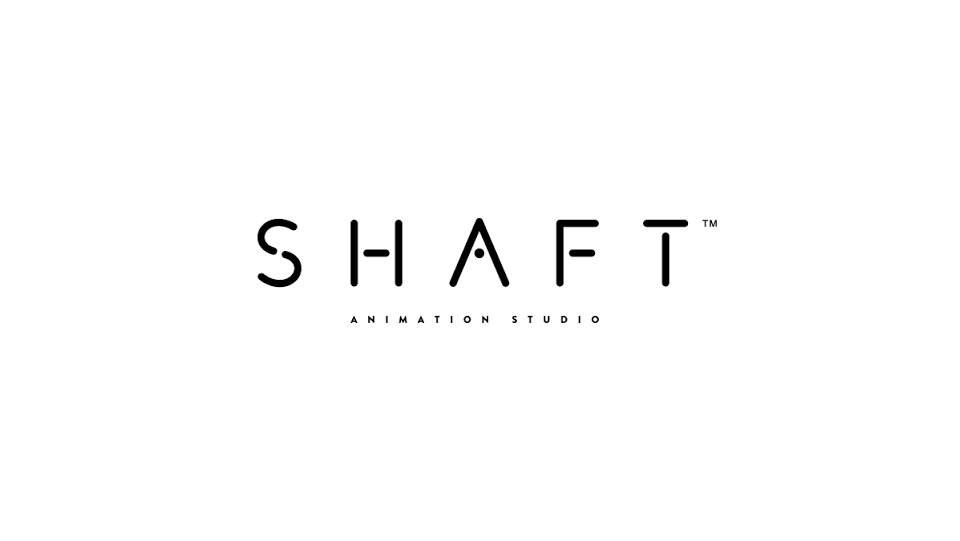

Monogatari
Intro
Welcome to my Monogatari Fanpage!
Because i am an avid anime fan i decided to make an anime related page for my next assignment. I
started getting in to anime at the age of 18 and haven't stopped since. The Monogatari series is
somewhat special to me, since it was my first dialog heavy anime. You have to stay on your toes to
catch everything this anime offers psychology wise. There are some fight scenes, which are great, but
it's mostly about the characters and their personal development. The animation style is mindblowing. I
have never seen anything like it prior to watching this. The attention to detail and cinematography is
outstanding. I didn't know that anime could be directed and animated like this. It might seem a little
weird at first but if you start paying attention to small details and appreciate the artstyle you are
in for a ride!
Enjoy
Synopsis
The Monogatari series revolves around Koyomi Araragi, a third-year high school student who is almost human again after briefly becoming a vampire. One day, a classmate of his, the reclusive Hitagi Senjōgahara, falls down the stairs into Koyomi's arms. He discovers that Hitagi weighs nothing, in defiance of physics. Despite being threatened by her to keep away, Koyomi offers his help and introduces her to Meme Oshino, a strange middle-aged man living in an abandoned building, who cured him of being a vampire. Once Koyomi helps solve Hitagi's problem, she decides to become his friend. As the series progresses, Koyomi finds himself involved with other girls, each afflicted by different "oddities", including the ghost of a child called Mayoi Hachikuji; his underclassman Suruga Kanbaru; Nadeko Sengoku, a friend of his sisters; his classmate Tsubasa Hanekawa; and his own younger sisters Karen and Tsukihi. To deal with the spectres, Koyomi relies on guidance from Oshino and, later, from Shinobu, the same vampire who attacked him, now with the appearance of an eight-year-old girl.
Characters
Koyomi Araragi
Koyomi Araragi (阿良々木 暦) is the main protagonist of the Monogatari series and the most frequent narrator. He is a third year high school student who survived a vampire attack during spring break, and barely regained his human life in the time that followed. Since then, he's been affiliated with Shinobu Oshino, the vampire that had attacked him, and continues to feed her his blood. As such, he's still not entirely human and certain vampire traits remain, such as regeneration. Koyomi is the narrator of all First Season and Final Season arcs as well as two from Second Season, four from Off Season, and two from Monster Season.
Shinobu Oshino
Shinobu Oshino (忍野 忍) is a mysterious vampire girl who acts as Meme Oshino's companion in the ruins of Eikou Cram School. Later in the series, she resides in Koyomi Araragi's shadow during the day. She was formerly a human child princess named Rola (likely meant to be Lola or Laura in English) who was cursed into causing anyone in proximity to her to commit suicide. She then took the name of Acerola before meeting a purebred vampire that turned her into a powerful vampire named Kiss-Shot Acerola-Orion Heart-Under-Blade. She now takes the form of an eight-year-old girl with another new name after losing most of her powers.
Hitagi Senjougahara
Hitagi Senjougahara (戦場ヶ原 ひたぎ, Senjōgahara Hitagi) is a third-year student of Naoetsu Private High School. She is considered to be a frail-looking girl with an "incurable disease" and is distant from others. In an accidental encounter with Koyomi Araragi, her closely kept secret is exposed, and triggers a life-changing experience. In the course of the series she receives the nickname Gahara and uses the alias Senshougahara.
Meme Oshino
Meme Oshino (忍野 メメ) is a middle-aged man who works as a nomadic oddity specialist who collects information, reinforces balance, and helps resolve cases. Early in the series, he lived with Shinobu Oshino in Eikou Cram School. He helped Koyomi Araragi to normal after being bitten by a vampire, and becomes his informant when it comes to oddities for some time. For most of the series, he's missing after leaving town seemingly unannounced.
Tsubasa Hanekawa
Tsubasa Hanekawa (羽川 翼) is Koyomi Araragi's classmate, close friend, and a class representative in Naoetsu Private High School. She is known at school as an overachiever and model student who is admired by many. However, hidden by her achievements in school and her kind personality is a tense family life caused by unfortunate circumstances. She was bewitched by an oddity on the first day of Golden Week, giving birth to her "alternate self" called Black Hanekawa, and for some time was responsible for a series of attacks on various people in town.
Yotsugi Ononoki
Yotsugi Ononoki (斧乃木 余接) is an expressionless human corpse tsukumogami and the shikigami familiar of Yozuru Kagenui. She's a somewhat unique take on both of the terms that define her, as tsukumogami are normally described as tools that have come back to life after years of neglect, and shikigami are typically depicted as being spirits or ghosts that are bound to an onmyouji master. In her case, she's a corpse that was likely once used as a "tool" and neglected but brought back to life, and a shikigami in the sense that she's a "spirit" that is bound to her master.
Producers
Nisio Isin
Nisio Isin (西尾 維新 Nishio Ishin, born 1981), stylized NisiOisiN to emphasize the palindrome, is
the pen name of a Japanese novelist and manga writer. He attended and left Ritsumeikan
University without graduating. In 2002, he debuted with the novel The Beheading Cycle
(クビキリサイクル Kubikiri Saikuru), which earned him the 23rd Mephisto Prize at twenty years of
age. He currently works with Kodansha on Faust, a literary magazine containing the works of
other young authors who similarly take influence from light novels and otaku culture, and
Pandora, the Kodansha Box magazine. He was also publishing a twelve volume series over twelve
months for the Kodansha Box line; Ryusui Seiryoin was matching this output, and the Kodansha
Box website stated that this is the first time in the world two authors have done twelve volume
monthly novel series simultaneously from the same publisher. In February, 2008, his novel
Death Note Another Note: The Los Angeles BB Murder Cases, which is based on the Death Note
manga, was released in English by Viz Media. Del Rey Manga has already released the first
and second volume in his Zaregoto series.
His Monogatari, Katanagatari and Zaregoto novels have been adapted into anime. The sequel
(Nisemonogatari) novel has also been adapted as an anime, as well as most of the "Monogatari
Series" to date. Another of his works, Medaka Box, has been adapted into a two-season anime
series, along with his light novel Juni Taisen, which has also been adapted into an anime.
Studio Shaft
Shaft, Inc. (株式会社シャフト) is a Japanese animation studio founded on September 1, 1975 by Hiroshi Wakao. In 2005 they began working exclusively with the director Akiyuki Shinbo, who is best known for his unique use of gags, references, and avant garde cinematography notably in Pani Poni Dash!, Maria Holic, Sayonara, Zetsubou-Sensei, Hidamari Sketch, Bakemonogatari, and Puella Magi Madoka Magica.